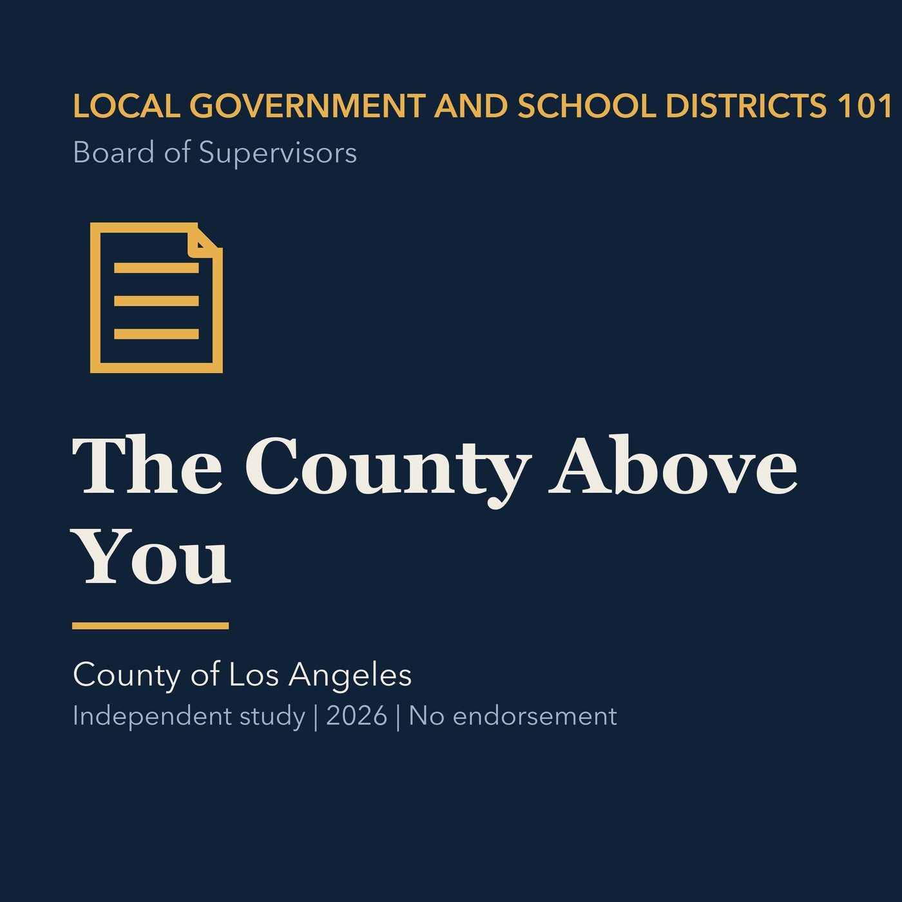

EPISODE 03
The County Above You
Maps Los Angeles County authority and the responsibilities of its Board of Supervisors.

- Stable GUID
7c05183d-63f9-5054-9636-ef00dc1fb00d- Release
- local-government-101-v2026.3
- SHA-256
99750d92814c36c44ab43e1df325a540b00f3cd538a672e8ebd2df892afbf944